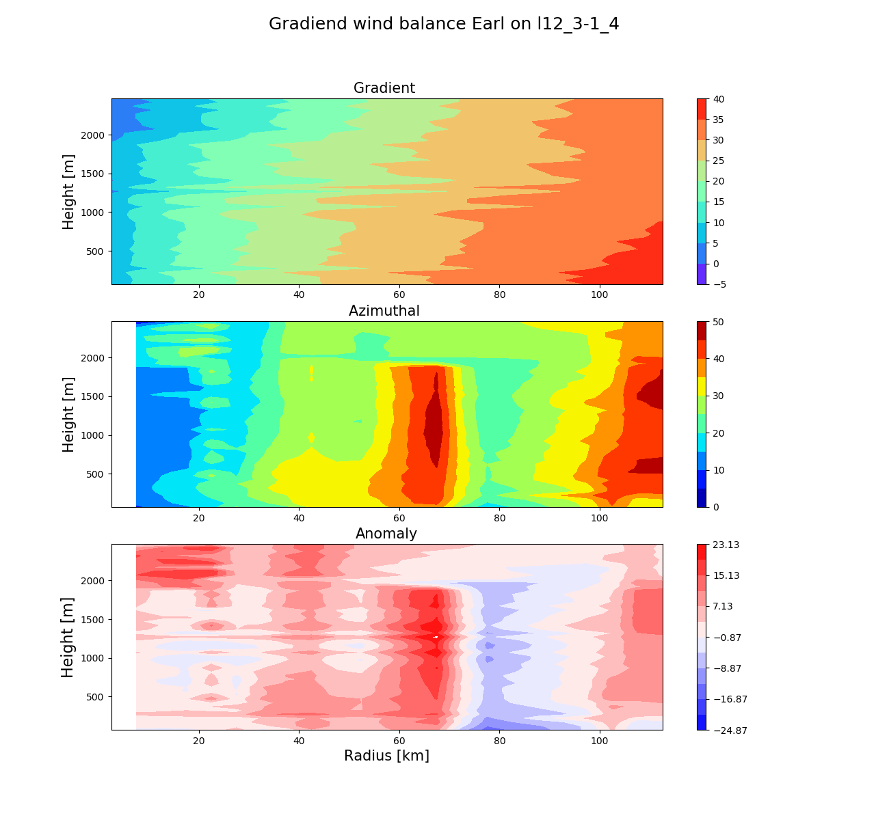
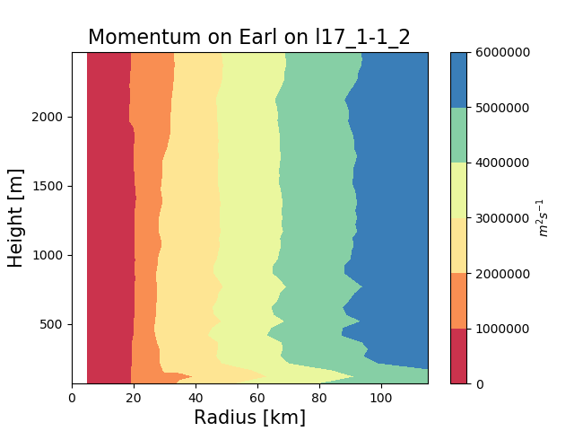

5. Evaluate gradient wind balance and momentum!¶
5.1. Gradient wind balance¶
Tropical Cyclone paradigms, such as the one by [Ema86] assumes that gradient wind balance given by:
where \(\rho_0\) is a constant density, \(\frac{\partial p}{\partial r}\) is the radial gradient of the pressure field, \(V_g\) is the gradient wind and \(f\) is the coriolis parameter, holds in the axisymmetric view of a TC.
To compute the previous equation, the algorithm provided by [BM08] is as follows:
- Fit a quadratic curve to the radius-pressure scatter.
- Interpolate the pressure fields over the radius-height grid \(r\times H\).
- Linearly approximate f at all points in the grid.
- Solve the second order equation using a numerical approximation software (in our case, our beloved numpy).
Hurricane Isabel [BM08] [SK08] was one of the first major Hurricanes found to exceed gradient wind balance and anomaly plots were reported and or discussed in the papers that analyzed the storm. Their plots were located at a certain showing how the tangential or azimuthal wind speed at that height exceeded the predicted gradient wind.
This example proposed in the DVT puts forth a different visualization of gradient wind (im)balance. A three panel plot showing a) gradient wind estimation, b) computed tangential wind field and c) the anomaly. The anomaly \(alpha\) will be simply defined as the difference between the tangential and gradient winds. In this proposition,(sub) super-gradient flow will have a (negative) positive \(alpha\).
Note
This example is not documented in-line but it is rather explained through the Sphinx-Gallery pages, i.e., through this text floating around on top of the text-block. This allows to have short but explained example files.
The first section of this example includes the preamble, which is highly documented in Plot the drift of all dropsondes for a TC and processing().
Notice the import of toolbox.dp_dr() and toolbox.getgradwind(). Reader should read this documentation before entering the next blocks of this example.
import os
import sys
import numpy as np
import matplotlib.pyplot as plt
from toolbox import dp_dr,getgradwind
from scipy.interpolate import griddata
The example is based on reading-in the outputfile of the module processing(), just as Plot vorticity and divergence in 3D views is, by
implicitly stating the filename through the storm name and date.
The file is then imported as a numpy array through the function np.genfromtxt.
Fields are allocated as per written in processing() where fcor is the coriolis parameter and the
rest maintain the variable as used in the DVT.
storm='Isabel'
sdate='16_12-21_12'
matrix=np.genfromtxt(storm+sdate+'.txt')
r=matrix[:,0]
H=matrix[:,5]
u_cartesian=matrix[:,2]
v_cartesian=matrix[:,3]
v_tang=matrix[:,10]
x=matrix[:,12]
y=matrix[:,13]
fcor=matrix[:,9]
pressure=matrix[:,8]
thetas=matrix[:,1]
The next piece of block defines the grid where gradient wind balance will be computed and creates the numpy array fields for both gradient wind and the interpolated 2D coriolis parameters. Height vector is defined m and radius vector is defined in km.
ri=np.arange(0,120,5)
height_vec=np.arange(50,2500,50)
gradwind3d=np.zeros((len(ri)-1,len(height_vec)))
fcoriols2d=np.zeros((20,len(height_vec))
The next section iterates over the height vector specified above (notice the user can tamper this vector).
Subsequently, a threshold of 50 m (split in two directions) is used to obtain all points in the given height value of the height vector.
In other words, all points in a 50 m layer are used to create the interpolated pressure field.
Subsequently, the radial pressure gradient is computed using the function toolbox.dp_dr().
The coriolis parameter f is then re-scaled and saved in the 2D array.
Finally gradient wind is approximated through the function toolbox.getgradwind().
print('Getting radial gradient of pressure and gradent wind')
for jindex,hh in enumerate(height_vec):
# Selection
indices=np.where((H>=hh-25)& (H<hh+25))[0]
# Quadratic interpolation
interp_pres=np.polyfit(r[indices],pressure[indices], deg=3)
a,b,c,d=interp_pres
pres=a*ri**3+b*ri**2+c*ri+d
# Linear interpolation of coriolis.
finter = np.polyfit(r[indices], fcor[indices],1)
fis=finter[0]*(ri)+finter[1]
#Radial gradient of pressure ; new radius is now in m.
dpdr,newradius=dp_dr(pres,ri)
# Unit change of f
fis=fis*10**(-2)
fcoriols2d[:,jindex]=fis
#Gradient wind function
gradwind=getgradwind(dpdr,newradius,fis)
gradwind3d[:,jindex]=gradwind
The next block will then be concerned with plotting the obtain gradient wind evaluation as indicated and explained before through a 3 panel figure. Notice that the first step is to re-scale new radius since this variable was changed to m in the previous block. Then the figure object is created and the upper panel filled with the gradient wind plot, notice that this panel is anticipated to have slightly lower values than the azimuthal wind speed. Similar procedure goes for the azimuthal wind speed which, after being filled in the middle panel is used to compute the anomaly which is finally plotted in the last line of the block. This next block contains intermediate level commands, that have been documented before and are thus not explicitly explained in this section.
The final block of the gradient wind plots, simply establishes figure title and saves, shows and closes the figure object (comment-uncomment as user chooses). .. code-block::python
caption: Finalize plot plt.suptitle(‘Gradiend wind balance ‘+storm+’ on ‘+sdate,fontsize=16) #plt.savefig(‘figs/gradwind’+sdate+’.png’) #plt.show() plt.close()
5.2. Momentum¶
Angular momentum is a measure of the storm’s strength in the inertia of a TC to rotate and spin [BM08]. Several paradigms of TC intensification, such as [Ema86] and [M+09], use momentum and momentum advection. In this sense, momentum fields and momentum advection is seen as a measure of storm intensity and the possibility of intensity change.
Momentum is estimated through different approaches but this script follows the approach indicated by [BM08].
where \(r\) is the radius or distance to the centre of the storm, \(v\) is the tangential velocity and \(f\) is the coriolis parameter. This is estimated as the sum of a component associated with the coriolis parameter and another component of the tangential wind speed. As such \(M\) is usually referred to as the specific absolute vertical angular momentum or absolute circulation.
The following block computes the momentum fields iterating over the interpolated radii grid (ri). First, momentum array is defined and the interpolated tangential velocity is computed over the grid. Inside the radius loop, momentum is computed by three operations, first the estimation of the component associated with the tangential velocity and secondly, the (array) computation of the second term by slicing the coriolis vector and multiplying it for the iteration-radius. Momentum is then simply the addition of these two previous terms.
momentum=np.zeros((len(ri),len(height_vec)))
vt_interp=scipy.interpolate.griddata((r,H),v_tang, (ri[None,:], Hi[:,None]),method='linear')
# Radius loop
for index,r0 in enumerate(newradius):
vr=secondazi[:,index]*r0*1000
fr2=fcoriols2d[index,:]*(r0**2)
momentum[index,:]=vr+(0.5)*fr2
After filling the momentum array, the contour plot is produced using a standard array for the colour levels (levels) that starts from \(1\times 10^{6}\) [\(m^2 s^{-1}\)]. The colormap chosen is Spectral due to the high colour contrast between levels. The figure directory can be changed according to user’s os.
plt.contourf(ri,Hi,momentum.T,levels=10**(6)*np.arange(0,7,1),cmap='Spectral')
plt.colorbar(label=r'$m^2 s^{-1}$')
plt.ylabel('Height [m]',fontsize=15)
plt.xlabel('Radius [km]',fontsize=15)
plt.title('Momentum on '+storm+' on '+sdate,fontsize=16 )
plt.savefig('figs/momentum'+sdate+'.png')
plt.show()
5.3. Expected gradient balance for Earl in September 3, 2010:¶
5.4. Expected momentum plots for Earl in September 1, 2010:¶
This script can be used by both inserting in the interface the name of storm and selecting the option create plots of the 3D kinematic structure. Similarly, this script can be used individually if the storm name, date and the filename are specified in the second block of this example.